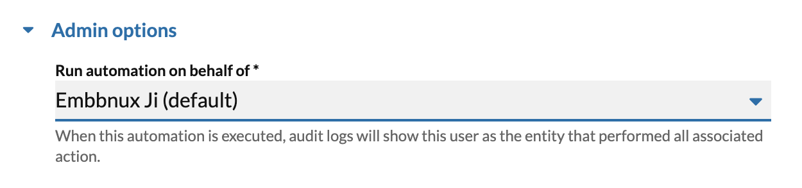

Triggers
The creation of all custom workflows begin by selecting the event that will trigger the automation to be executed. When customizing an automation trigger, users can specify filtering conditions for the automation, which dictate the circumstances under which an automation will be executed. Users can specify whether all conditions must be met, or whether any (one or more) conditions must be met.
Index of all triggers
Limiting the frequency of an automation
Users can also limit how often an automation will be run for any given triggering event. For example, suppose you are creating an SMS auto-reply, to notify someone that you are out-of-the-office. In such circumstances, you wish to only send an auto-reply once per day regardless of how many times a given individual may send you an SMS in a 24-hour period.
Each automation has a way to limit the frequency of its execution based upon the person triggering the event. Look and read carefully when editing a trigger to see how its execution can be throttled.
Variables added to an automation's context by a triggering event
Each triggering event has metadata associated with it that will help govern how the automation will function. This metadata is accessed within the context of an automation via "trigger variables." For example, you may want to build a workflow that performs different functions depending upon the content of an SMS message that was received. The event associated with this is SMS received and the trigger variable would be "message text."
Consult the documentation for each trigger to see what variables it adds to the automations context.
See: Variables
Administrator options
Running an automation on behalf of another user
Administrators have the exclusive ability to modify which user an automation is executed on behalf of. This ability is especially useful when a user wants to send SMS from a phone number that belongs to another user. Given that users can only send SMS from the phone numbers assigned to them, this allows a user to send SMS from a phone number they may otherwise not be allowed to.

The same concept applies across the board. When you run an automation on behalf of another user, you can perform any action that the user is permitted to do, even if the owner of the automation doesn't have that ability themselves.
One can modify this setting by editing the trigger node associated with an automation.